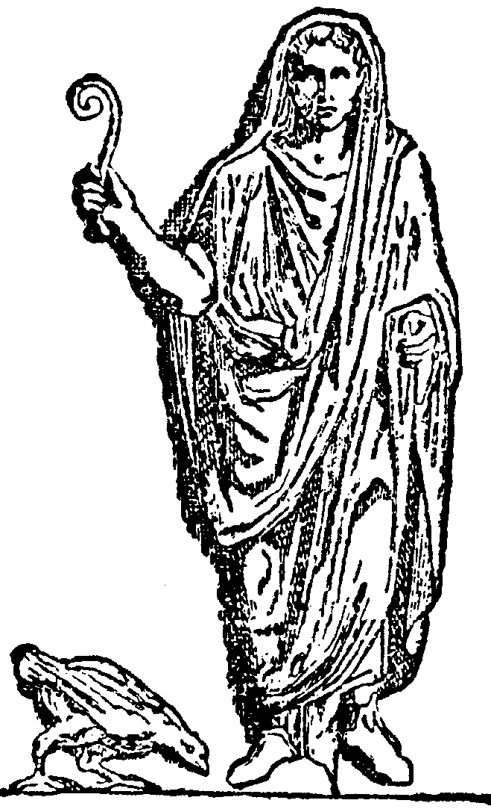

divine default
Through the AI at normal temperature. Usually right. No warranty, express or implied.
summon n = 2 + 2
// 4 (it thinks)v0.1.0 · an interpreted language · do not deploy
Augur is an interpreted language where every operation is divined by an oracle instead of computed. Control flow is a real tree-walking interpreter. The answers are a vibe. It's a joke about AI software — the interpreter is dead serious.
Free & offline with the fake oracle · plug in Anthropic, OpenAI, OpenRouter or Ollama for the real thing.

oracle "anthropic"
summon answer = 2 + 2 // probably 4
proclaim answerOther languages compute 2 + 2. Augur asks nicely and hopes for the best. There is a certain { } block for cowards.
The confidence gradient
Three zones, decided at op-time by a stack. Same syntax — wildly different relationship with the truth.
Through the AI at normal temperature. Usually right. No warranty, express or implied.
summon n = 2 + 2
// 4 (it thinks)Crank the temperature. The dice are loud. 2 + 2 may now yield a fish.
chaos 0.9 {
proclaim 2 + 2 // "fish"
}Real, deterministic, native. No AI, no tokens, no excuses. The grown-up zone.
certain {
proclaim 2 + 2 // 4. always.
}The golden rule: control flow, scope and function calls are 100% deterministic. The oracle only decides whether each step's result is right — never what is computable.
Why Augur?
Sort, filter, map and classify by plain English. Your data, judged by an oracle.
sort tickets by "looks urgent"Persistence is fiction. Overflow the context budget and it forgets the oldest rows. Object permanence not included.
banish "clients under 60" from clientsRun divinations in parallel; ask three times and trust the majority. Self-consistency via mob rule.
divine "the sentiment" upon review thriceA whole HTTP server whose routes are hallucinated on demand. Production-grade.*
serve 8787 with handleAssertions the oracle judges. Unit tests, but make them feelings. Great for fuzzy LLM output in CI.
believe reply is "polite and on-topic"Force hallucinations into a known shape. Wrong, perhaps — but well-typed.
divine "the user" as {name: text, age: number}* not production-grade.
Examples
Every snippet below runs. Use --oracle fake to run them free and offline, or a real oracle to let chaos in.
A 60-second tour
Install & run
# dev — needs Bun (https://bun.sh)
bun install
bun run src/index.ts examples/semantic_etl.aug
bun run src/index.ts --seance # interactive REPL# standalone binary — runs with no Bun or Node
bun run build # produces ./aug
./aug examples/guess.aug \
--oracle openrouter --model openai/gpt-4o-mini --rememberDefault oracle is fake (deterministic, offline). --remember caches divinations to disk for reproducible, zero-token re-runs. Delete the cache to re-roll the dice.
Frequently divined questions
No. The database has amnesia, the auth is a vibe, and 2 + 2 bills you for the privilege. You will deploy it anyway.
Only with --remember, which memoizes every divination to disk. Without it, nondeterminism is the entire point.
2 + 2 cost?A few tokens and some dignity. Wrap it in certain { } and it's free, instant, and reliably 4.
It is prompt-injectable and the docs say so, repeatedly. The SHA-256 hash is hallucinated by the model. For anything real, move the hash and the check into certain { } with actual crypto.
An augur was a Roman priest who read the future in the flight of birds. We read it in token probabilities. Honestly, similar hit rate.
To find out what happens. The useful 20% — semantic filter/extract/classify, typed coercion, vibe-tests — turns out to be genuinely handy. The other 80% is the joke.